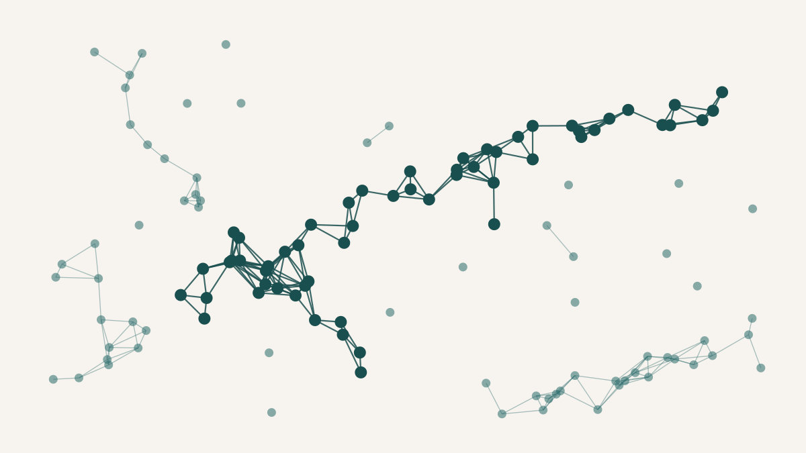

How Real Is the Largest Structure in the Universe?
Not long ago a group of astronomers announced the largest structure in the known universe: a chain of sixty-eight galaxy clusters, more than four hundred megaparsecs end to end, threading through the nearby sky. They called it Quipu, after the Andean knotted cords. It is a genuinely arresting object. But it is worth being precise about what kind of object it is, because "structure" is doing a lot of quiet work in that sentence. Quipu is not glued together; nothing holds it as a unit. It is a set of clusters that an algorithm looked at and decided to call one thing. The question a student and I got interested in was how much that decision depends on the algorithm — and on how much of the sky you happened to have measured.
The algorithm in question is friends-of-friends, and it is almost suspiciously simple. Pick a distance — call it the linking length. Draw a link between every pair of clusters closer together than that distance. Then follow the links: any set of clusters you can walk between, hop by hop, is declared a single structure. That is the whole method. There is no notion of a boundary, no model of what a supercluster should look like, nothing but a threshold distance and the connected components it produces. Quipu is what you get when you apply this rule, with a particular linking length, to a particular catalogue of X-ray-bright clusters. Change the linking length and the map of the universe's largest structures redraws itself: shorten it and Quipu fragments, lengthen it and separate superstructures fuse into one.
So the linking length is not a detail; it is the definition. And a definition that rests on a single distance scale has a specific vulnerability that I wanted to see in action. To do that we took a public catalogue — a few hundred X-ray clusters in a slice of redshift that contains Quipu and four other named superstructures — and ran six different clustering methods over it, scoring each against the published list of which clusters belong to which superstructure. At full catalogue density the fixed-linking-length methods won comfortably. Friends-of-friends, and two other methods that turn out to be mathematically identical to it, all recovered the published superstructures at an F1 score of 0.74, well ahead of the adaptive-density method, HDBSCAN, which managed only 0.47. If you had stopped there, the conclusion would have been tidy: use friends-of-friends, it is simple and it wins.
Then we started deleting clusters, and the winner fell off a cliff.
Why a fixed linking length is fragile. On the left, at full density, every neighbour sits within one linking length and the clusters chain into a single structure. On the right the linking length is exactly the same, but a third of the clusters are gone; the surviving gaps now exceed it, and the one structure shatters into fragments too small to count. Nothing about the algorithm changed — only how much of the sky was in the catalogue.
We removed clusters at random, in steps, and re-ran everything a hundred times at each step to average over which clusters happened to go. The fixed-linking-length methods held their F1 of around 0.74 down to eighty per cent of the catalogue, then dropped to 0.61, and then — at sixty per cent, still a substantial catalogue — collapsed to exactly zero. Not degraded: zero. Every recovered superstructure had crumbled into pieces below the minimum size that counts as a structure at all. HDBSCAN, the method that had looked mediocre at full density, did not do this. It slid gently from 0.47 down to about 0.41 at the sparsest sampling we tried, one cluster in five, and stayed there. The whole pattern reproduced in a second, independent redshift slice, where the fixed-scale methods actually cliffed even earlier.
The mechanism is the kind of thing that is obvious in hindsight and genuinely surprising in advance. A fixed linking length only works if it is comfortably larger than the typical gap between neighbouring clusters. At full density that gap is about sixty-seven megaparsecs and the linking length is fifty, which is close but sufficient. When you delete clusters at random, the survivors spread out: the mean separation grows as the inverse cube root of the sampling fraction. By the time a third of the clusters are gone, the typical gap has swollen past eighty megaparsecs — comfortably beyond the fifty-megaparsec reach — and the chains that made the superstructure simply stop connecting. This is not a gentle loss of accuracy. It is a percolation transition, the same abrupt threshold that governs whether a fire jumps across a forest or a fluid seeps through rock, and the fingerprint is right there in the data: the run-to-run scatter balloons exactly at the fraction where the structure blinks out, the way fluctuations always blow up at a critical point. Friends-of-friends does not weaken as the catalogue thins. It works, and works, and then it doesn't.
The reason HDBSCAN survives is that it never commits to a distance at all. Instead of asking "is this pair closer than fifty megaparsecs," it asks "is this region denser than its surroundings," and relative density is preserved when you subsample — the densest cores stay the densest cores even when the overall map thins out. It pays for that robustness with a worse score when the catalogue is complete, because it declines to chain in the sparse outskirts that friends-of-friends happily absorbs. Which method is "better" turns out to be the wrong question. The fixed-scale method is better when you have everything; the adaptive method is better when you don't; and the honest report is the trade-off, not a winner.
None of this means Quipu is not there. It means that how much of it you recover is a joint fact about the structure, the algorithm, and the completeness of your catalogue, and those three are not separable after the fact. A superstructure defined by a single length scale is, in part, a statement about how thoroughly the sky was surveyed where it lies — and the next generation of X-ray surveys will have wildly uneven depth across the sky, exactly the regime where a fixed linking length is least trustworthy. The practical recommendation that falls out of this is unglamorous and, I think, correct: in any patch where the catalogue might be less than about eighty per cent complete, do not trust a fixed-scale friends-of-friends result on its own. Run an adaptive-density method beside it and see whether the structure survives both.
An honest caveat that should go before any stronger claim
This was a descriptive comparison, not a verdict. The methods were run at their off-the-shelf settings rather than tuned, so the absolute scores would move under careful hyperparameter optimisation — though the density argument makes the cliff itself hard to tune away. The input catalogue is shallower than the one the original Quipu discovery used: thirty-three of Quipu's sixty-eight published members simply are not in it, living in deeper northern-sky surveys, so a third of the structure was unrecoverable here at any level of algorithmic skill and the absolute F1 numbers should be read with that ceiling in mind. Everything rests on two redshift slices of a single catalogue, scored against one published ground truth whose own uncertainties are not quantified. What the exercise establishes is narrow but sturdy: the recovery of large-scale structure by a fixed length scale has a percolation cliff, the cliff reproduces across slices, and an adaptive-density method sits on the other side of the trade-off. Turning that into a claim about any specific catalogue would need the same comparison run natively on that catalogue.